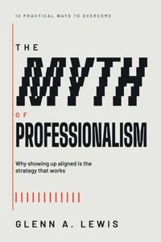
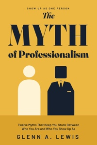
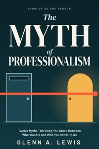
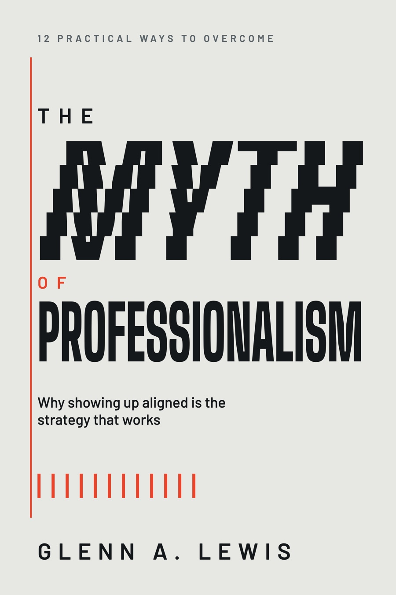

Twelve Myths That Keep You Stuck Between Who You Are and Who You Show Up As
Most people are taught to be one person at work and another everywhere else. This book argues that the split is a cost, not a requirement of adult life. Glenn A. Lewis calls the cure alignment, and names the idea that blocks it: professionalism as a mask you never get to take off.
Twelve myths sit between a reader and the person they actually are. They come in three sets: attitudes that begin with I need, behaviors that begin with I can't, and character patterns that begin with I must. Each chapter follows the same five steps, called the ALIGN Model: Awareness, Listening, Intention, Govern, New.
The argument is not anti-professional. The author says so directly: the goal is not to be less professional, the goal is to be one person.
Working professionals and leaders who feel the strain of performing a polished version of themselves. Managers, executives, coaches, ministry and nonprofit leaders. Smart, tired, and not looking for a motivational poster.
A reader finishes with a way to spot each myth in themselves, a repeatable five-step process to replace it, and a practice they can return to on an ordinary Tuesday.
Brené Brown, Simon Sinek, Patrick Lencioni, Adam Grant, Admiral Marquet. Books that sit between leadership and personal growth, quoted throughout the manuscript.
The voice is warm, plainspoken, and a little funny. It uses The Office, Ted Lasso, Shrek and Frozen as easily as Aristotle and Viktor Frankl. The author confesses his own failures on the first pages and says he is writing "not from the summit." The cover should look like that voice: confident, human, and unfussy.
The earlier cover used a half-white, half-black mask in navy and orange. The mask is the first image almost anyone reaches for with this subject, so this round starts from scratch and leaves it behind.
Every strong cover idea here comes from a picture the author puts in the reader's head. In rough order of how well each carries the whole book:
| Image | Where it lives | What it means |
|---|---|---|
| Wheel alignment | Section I opening and Chapter 19 | A car out of alignment pulls hard to one side and wears you out. Aligned, it drives with one hand. The thesis in one picture. |
| One person | Introduction, Chapter 19 | The same self in every room, whether or not anyone is watching. |
| Costume that becomes skin | Chapter 3, "The Prison of Professionalism" | A persona worn so long that taking it off feels like exposure. |
| Fence, not fortress | Chapter 12 | A boundary lets air and people through. A fortress is a withdrawal. |
| Scalpel, not sword | Chapter 15 | Authority used with precision to heal, not force to win. |
| Microphone, not megaphone | Chapter 7 | Being heard comes from quality, not volume. |
| The note that is not quite right | Chapter 14 | The author's music background. E flat is not E. Perfection is a lie. |
The book also has a quiet structure worth echoing in the system: three parts (attitude, behavior, character) and twelve myths. Twelve is a strong number for a pattern, a grid, or a count on a back cover.
These are refined concepts to react to, not finished covers. Each is built at 1800 by 2700 pixels (6 by 9 inches at 300 dpi). Type, color and art are all open. Please tell us which direction has the right feel and we will refine it.
All three at thumbnail size, about what a reader sees in an online search result.




A type-only cover that shows the thesis. MYTH is cut into five bands that drift off the margin and step back into line as they descend. A red guide line, the way a technician marks true, runs the full height. PROFESSIONALISM below it is perfectly straight. Twelve small red ticks, all in line, stand for the twelve myths.
Changes from the first sketch: fewer, shallower slices so the word reads at a glance, and larger scale. The eyebrow reads 12 Practical Ways to Overcome, so the top of the cover and the title form one sentence. The line under the title is the tagline, Why showing up aligned is the strategy that works. Concepts B and C still show the earlier eyebrow and subtitle until the author decides.
The Attitude Myths section opens with a version of you that "shows up to work every day before you do." Two figures share the floor. One is soft, round and unfinished. The other is a hard-edged suit with a blank square for a face, down to a pocket slot and a tie. Same height, same ground, different material. The reader decides which one they are.
Changes from the first sketch: MYTH is now the dominant word, the figures are larger, the suit has more detail, the floor band holds the subtitle and author, and the eyebrow line across the top reads Show up as one person.
Two very different doors: a flat slate office door and a warm, lit arched door at home. One orange-red line runs through both at the same weight, color and height. It is the cover version of "the same you in every room." It ends in a dot, which can read as a person, a period, or a point on a graph.
Changes from the first sketch: MYTH is now the dominant word, the art is larger and bleeds off the left edge, the two worlds contrast in temperature, and the long subtitle carries the promise.
This table describes refined Concept A, the author's first choice. Concept C is the second choice and the safer pick for a quieter shelf. B shares the large title word and the subtitle on the front. It is a design read, not sales data.
| What buyers look for | How A answers it |
|---|---|
| Title legible at thumbnail | MYTH is set in heavy condensed type at about a quarter of the cover height, black on pale grey. It reads at 110 px wide and the red guide line is the first thing the eye finds. |
| One idea, instantly | A word that steps back into line. The cover shows the thesis (alignment) without a picture of a person, a mask or a door. |
| Category fit | Bold, type-led covers are common on business and leadership lists. A pale ground makes it stand out beside the dark covers around it. |
| Promise on the front | The subtitle names the reader's problem in the reader's words, and the eyebrow turns the title into a numbered promise: 12 practical ways to overcome the myth of professionalism. |
| Series potential | Each title can carry its own misaligned word (productivity, protection) in the same layout, with a new color for each book. |
| Room for endorsements | The open band between the subtitle and the author line can take a short cover quote without redesign. |
| Production | Type and flat shapes only. No stock photo, no licensing, and clean at any size. The slicing needs hand-tuning by a type designer. |
Real comparison titles, trim and price points should come from the publisher's own sales team.
This is the first of three books built on one system, so the cover should be designed as a family. Book 1 teaches the ALIGN Model. Books 2 and 3 are named in the closing chapter of the manuscript, and their titles below come from there.
Suggestion: one fixed layout for all three (title block, art zone, author line), with a different color and a different single graphic idea for each book. Concept C extends most easily. Concept A extends well too, since each title can carry its own "misaligned word." The author's earlier title You Can't Live On Inspiration Alone uses a blue dot grid, so please tell us whether these three should sit visually with it or stand apart as their own set.
Title
The Myth of Professionalism
Eyebrow
12 Practical Ways to Overcome
Subtitle on the cover
Why showing up aligned is the strategy that works
Full subtitle (title page, back cover, listing)
Twelve Myths That Keep You Stuck Between Who You Are and Who You Show Up As
Author
Glenn A. Lewis
The short tagline sits on the front so the numbered promise in the eyebrow is not repeated. The longer subtitle keeps the full promise in the metadata. We would like the publisher's advice on this split.
You're not broken. You're just out of alignment.
You are one person at work and another everywhere else, and you are tired of keeping the two apart. Professionalism told you to leave your real self at the door. It left you with a mask that feels like skin.
In The Myth of Professionalism, Glenn A. Lewis names twelve myths that keep capable people stuck, from "I need to be liked" to "I must be a loner," and gives you a five-step process to replace each one with something more honest and more sustainable.
The goal is not to be less professional. The goal is to be one person.
Glenn A. Lewis is the founder and CEO of RedShift Consulting, LLC, and the creator of the ASK System. He lives in Maryville, Tennessee. theasksystem.com
This is a working draft written from the manuscript. The author should approve the final back-cover copy.